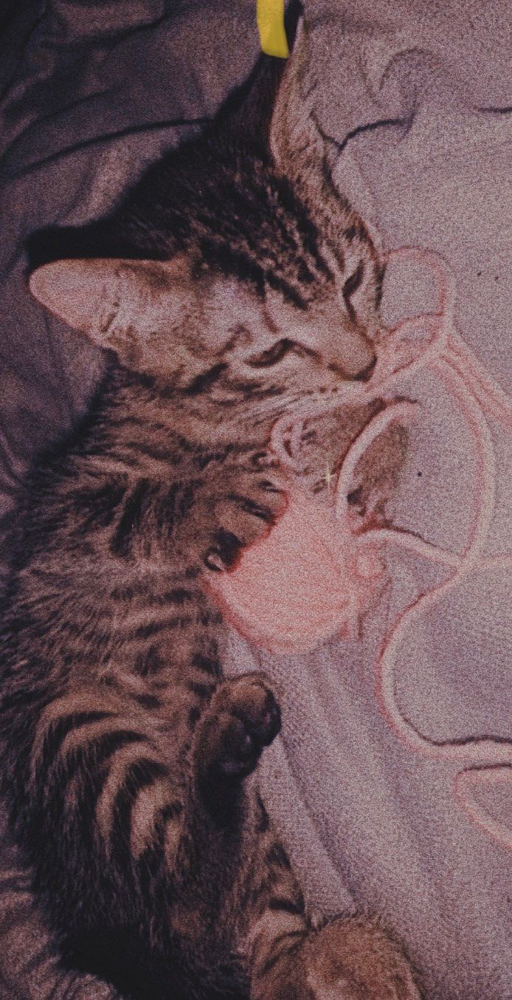
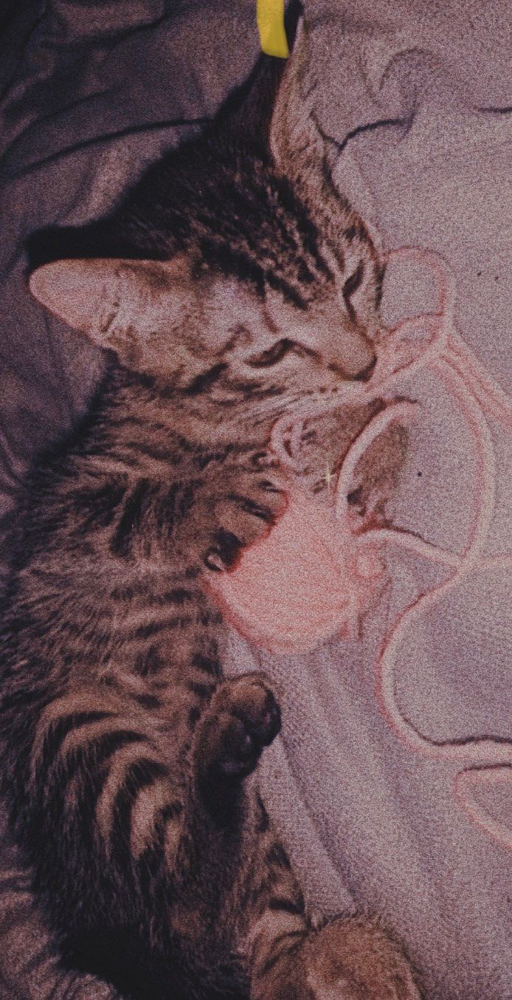
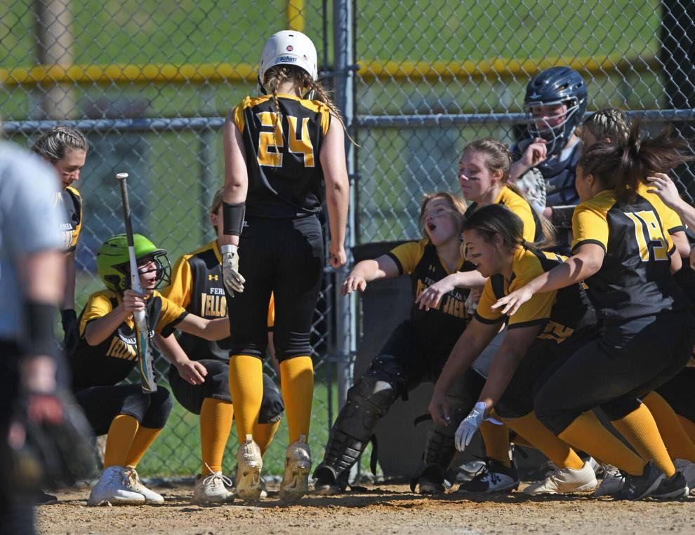
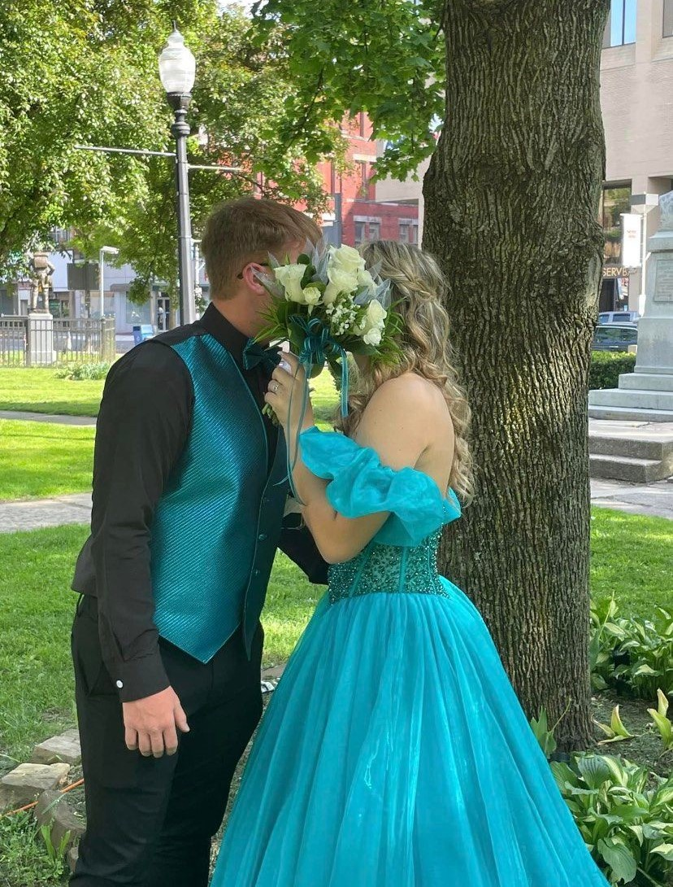

This is everything that goes on in my life! Every day is exciting and new.
 

This is my cat Ona and my dog, Mosey.
I love them very much and I’ve had Mosey
since the time I was 4. I got Ona over the Covid
outbreak and she has just been the sweetest thing.

My family! I have two little brothers, 9 and 10.
Their names are Chris
and Julius. I have an older
sister named Madalyn, she is 22, and is in
the air force.
And of course, there is my mom and dad. My dad
coached
me in softball
since the time I was 4. My mom has always been a huge
part and my biggest supporter.

Sports have been a part of my life since I was born! I grew
up watching
my sister and always trying to be like her. Who
knew I would grow up to
be the athlete I am. My dad was a
huge part of my sports career and of
course my mom was
always my number one fan (even if she gets confused
at games).

My boyfriend of a year, Nick! My bestest friend <3